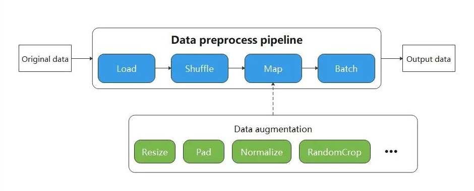
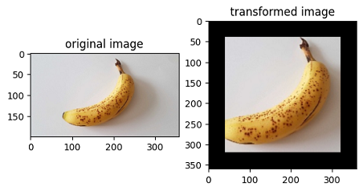

Lightweight Data Processing
When resource conditions permit, in order to pursue higher performance, data transforms are generally executed in the data pipeline mode.
The biggest character of execution based on pipeline mode users have to define the map operator. As shown in the figure below, the Resize, Crop, HWC2CHW operators are scheduled by the map, which is responsible for starting and executing the given transform, and mapping and transforming the data of Pipeline.

Although constructing a data pipeline can process input data in batches, the API design of the data pipeline requires the user to start from constructing the input source, and gradually defines the individual processing operators in the data pipeline. Only when defining the map, will it involve data augmentation operators that are highly related to the user input data.
Undoubtedly, users only want to focus on the code that is most relevant to them, but other codes with less relevance add unnecessary burdens to the user throughout the code scene.
Therefore, MindSpore provides a lightweight data processing way, called Eager mode.
In the Eager mode, the execution of Transforms will not rely on constructing the data pipeline map. Instead, Transforms is executed in the form of a functional call. The code will be simpler and the results are obtained immediately. It is recommended to be used in lightweight scenarios such as small data augmentation experiments and model inference.

MindSpore currently supports executing various Transforms in the Eager mode, as shown below. For more details, please refer to the API documentation.
-
Submodule transforms, data transform implemented based on OpenCV/Pillow.
-
Submodule transforms, data transform implemented based on Jieba, ICU4C, etc.
-
Submodule transforms, general-purpose data transform implemented based on C++/Python/NumPy.
Eager Mode
The following is a brief introduction to the use of the Eager mode for each Transforms module. With the Eager mode, you only need to treat Transform itself as an executable function.
Data Preparation
The following sample code downloads the image data to the specified location.
from download import download
url = "https://mindspore-website.obs.cn-north-4.myhuaweicloud.com/notebook/datasets/banana.jpg"
download(url, './banana.jpg', replace=True)
Downloading data from https://mindspore-website.obs.cn-north-4.myhuaweicloud.com/notebook/datasets/banana.jpg (17 kB)
file_sizes: 100%|███████████████████████████| 17.1k/17.1k [00:00<00:00, 677kB/s]
Successfully downloaded file to ./banana.jpg
'./banana.jpg'
vision
This example will use Transform in the mindspore.dataset.vision module to transform a given image.
You only need to focus on what kind of data transform have to use, not any code for the data pipeline.
The Eager mode of the Vision Transform supports numpy.array or PIL.Image type data as input parameters.
import numpy as np
from PIL import Image
import matplotlib.pyplot as plt
import mindspore.dataset.vision as vision
img_ori = Image.open("banana.jpg").convert("RGB")
print("Image.type: {}, Image.shape: {}".format(type(img_ori), img_ori.size))
# Apply Resize to input immediately
op1 = vision.Resize(size=(320))
img = op1(img_ori)
print("Image.type: {}, Image.shape: {}".format(type(img), img.size))
# Apply CenterCrop to input immediately
op2 = vision.CenterCrop((280, 280))
img = op2(img)
print("Image.type: {}, Image.shape: {}".format(type(img), img.size))
# Apply Pad to input immediately
op3 = vision.Pad(40)
img = op3(img)
print("Image.type: {}, Image.shape: {}".format(type(img), img.size))
# Show the result
plt.subplot(1, 2, 1)
plt.imshow(img_ori)
plt.title("original image")
plt.subplot(1, 2, 2)
plt.imshow(img)
plt.title("transformed image")
plt.show()
Image.type: <class 'PIL.Image.Image'>, Image.shape: (356, 200)
Image.type: <class 'PIL.Image.Image'>, Image.shape: (569, 320)
Image.type: <class 'PIL.Image.Image'>, Image.shape: (280, 280)
Image.type: <class 'PIL.Image.Image'>, Image.shape: (360, 360)

text
This example will transform the given text by using the Transforms in the text module.
Eager mode of Text Transforms supports numpy.array type data as input parameters.
import mindspore.dataset.text.transforms as text
import mindspore as ms
# Apply UnicodeCharTokenizer to input immediately
txt = "Welcome to Beijing !"
txt = text.UnicodeCharTokenizer()(txt)
print("Tokenize result: {}".format(txt))
# Apply ToNumber to input immediately
txt = ["123456"]
to_number = text.ToNumber(ms.int32)
txt = to_number(txt)
print("ToNumber result: {}, type: {}".format(txt, txt[0].dtype))
Tokenize result: ['W' 'e' 'l' 'c' 'o' 'm' 'e' ' ' 't' 'o' ' ' 'B' 'e' 'i' 'j' 'i' 'n' 'g'
' ' '!']
ToNumber result: [123456], int32
transforms
This example will transform the given data by using the general Transform in the transforms module.
Eager mode of general Transform supports numpy.array type data as input parameters.
import numpy as np
import mindspore.dataset.transforms as trans
# Apply Fill to input immediately
data = np.array([1, 2, 3, 4, 5])
fill = trans.Fill(0)
data = fill(data)
print("Fill result: ", data)
# Apply OneHot to input immediately
label = np.array(2)
onehot = trans.OneHot(num_classes=5)
label = onehot(label)
print("OneHot result: ", label)
Fill result: [0 0 0 0 0]
OneHot result: [0 0 1 0 0]